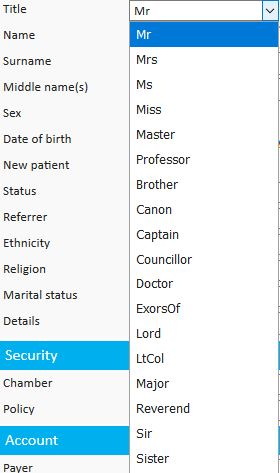
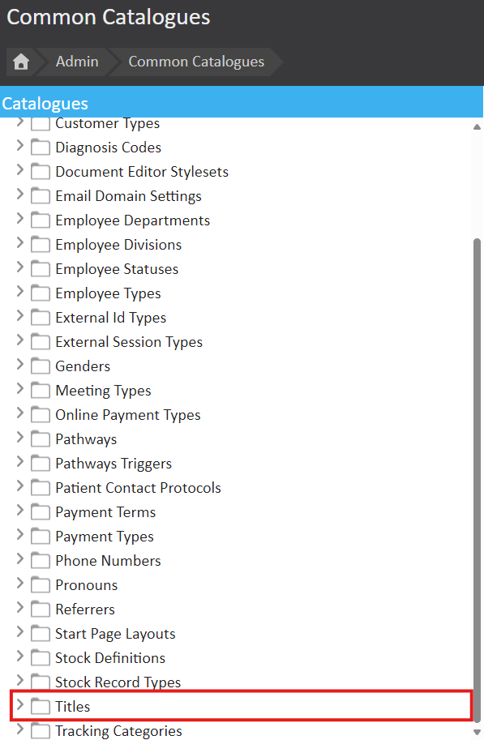
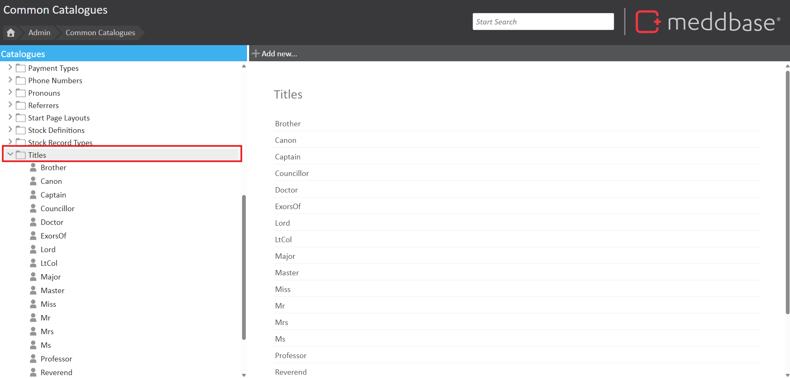
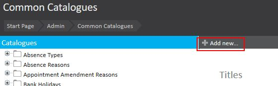
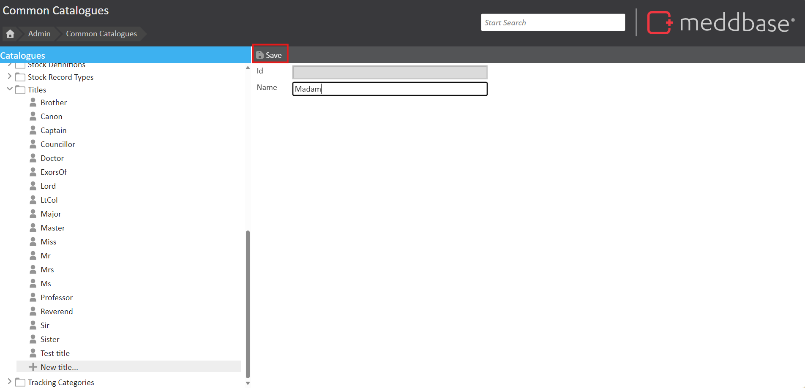
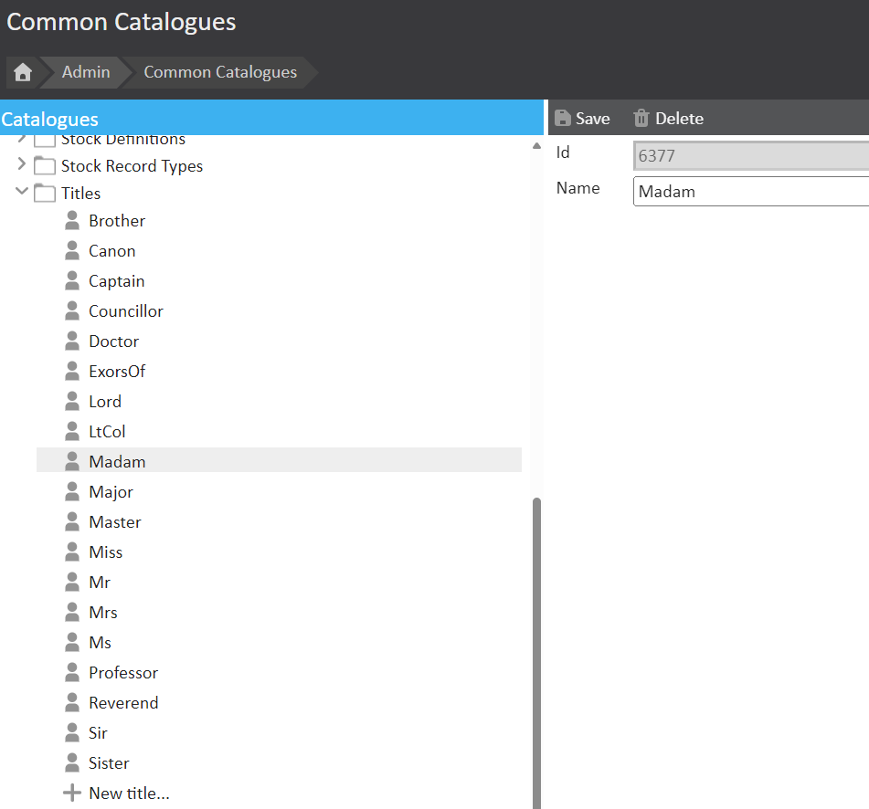

Common Catalogues is an area in Meddbase where dropdown lists are defined. It allows users to customise these lists by adding, updating, or removing elements to meet specific needs.
Meddbase comes in-built with a set of titles for people who are added to the system, although this is an extensive list this is by no means a complete list of all titles. These titles can be updated or removed within the Common Catalogues area.
This article explains how to use to add a new title, such as 'Madam,' to the list of available titles in the system.

Navigate to Start Page > Admin > Common Catalogues.
In the Common Catalogues menu, find the folder named 'Titles'. 
Expand the folder by selecting the '>' symbol or click directly on 'Titles'. 
Scroll to the bottom of the list and select 'New Title'. Alternatively, click '+Add New' after selecting the 'Titles' folder. 
Click the Save button. 
Meddbase will automatically assign a unique Id for the new title.
The newly added title will now appear as an option in the dropdown menu in any Title field. 